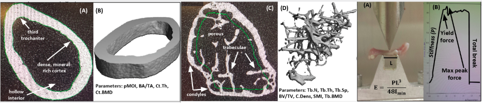
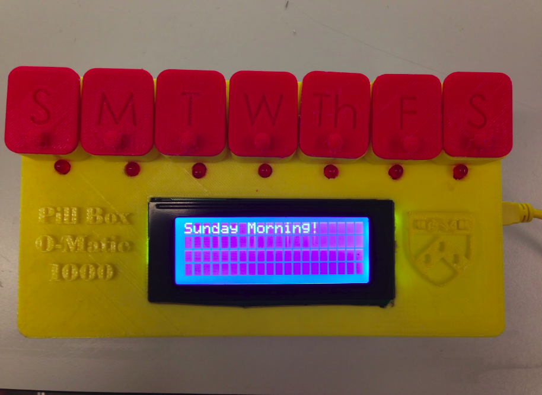

Projects and Publications
2018
DuoAssist: Senior Design Project
- Created a novel assistive hand rehabilitation device for post-stroke hemiparesis patients
- Read in finger position data from one hand, sent data to motors on the other hand to force it to mirror motion to aid in physical therapy
- Developed Android application for gamification and tracking patient progress
Brain-Computer Interfaces Final Project
Predicted location of patient's fingers from electrocorticographical recordings using techniques like time-frequency domain conversion, principal component analysis, and LASSO
SeizeAssist: Rothberg Catalyzer
Developed Android application to read EEG data from Muse headband in order to predict and provide phone alerts for seizures
Rehabilitation Robotics Research
Created a ROS webpage for video streaming from Lil Flo, a child-friendly remote assistive physical therapy robot
2017
GRASP Lab Haptics Research
Wrote paper as member of Rachleff Scholars program [link]
Carlson, J. & Kuchenbecker, K. An Interactive Augmented-Reality Video Training Platform for the da Vinci Surgical System. ICRA 2017: C4 Surgical Robots, 47-49. [link] [paper]
Abstract: Teleoperated surgical robots such as the Intuitive da Vinci Surgical System facilitate minimally invasive surgeries, which decrease risk to patients. However, these systems can be difficult to learn, and existing training curricula on surgical simulators do not offer students the realistic experience of a full operation. This paper presents an augmented-reality video training platform for the da Vinci that will allow trainees to rehearse any surgery recorded by an expert. While the trainee operates the da Vinci, they see their own instruments overlaid on the expert video. Tools are identified in the source videos via color segmentation and kernelized correlation filter tracking, and their depth is calculated from the da Vinci’s stereoscopic video feed. The user tries to follow the expert’s movements, and if any of their tools venture too far away, the system provides instantaneous visual feedback and pauses to allow the user to correct their motion. This combined and augmented video provides the user with an immersive and interactive training experience.
ProtoFluidics
Designed a modular system of microfluidics to be 3D printed aboard International Space Station
Developed webapp to streamline microfluidic design process [link]
WunderWasser
Used Processing and Arduino software as well as Hapkit and Haply hardware to teach students about Navier-Stokes fluid flow by visual and haptic simulation [description] [code]
Bioengineering Lab
- Built paper microfluidics for precisely-timed drug delivery
- Developed robust, lightweight system to filter heart and breathing rate from ECG data
- Designed and built from scratch a spectrophotometer to quantify absorbance and fluorescence in order to measure concentration of unknown samples (1st place class accuracy)
Biomechatronics Final Project
Built Myo band EMG-controlled Lynx robot with custom end effector to pick up and move a soft object without damage (and fight other robots)
2016
Built human-machine interface to control prosthetic made of cockroach leg and servo motor
Marauder's Mapp
Built an Android social media app to track friends' locations using Google Voice, Google Maps, and Parse APIs
Devpost Choice [link]
PennApps Semifinalist (Top 30)
Operating Systems Final Project
Modeled an operating system in C, building an interrupt-based scheduler to perform context switches and swap out processes, as well as building the shell for users to interact with this operating system
Algorithms Final Project
Implemented an algorithm to parse Wikipedia articles, model articles as a graph based on links between them, implement various graph algorithms, and implement PageRank in order to create a search engine
2015
Orthopaedic Bioengineering Lab Research
Carlson, J., Pei, S., Jang, C., Wu., C., & Wang, L. The Effects of Long-Term Supplements on Male Skeleton in Mice. ORS Abstracts 2016, Annual Meeting Poster 1589. [p. 131], [full abstract]
To determine if soy consumption could help decrease risk of osteoporosis, I analyzed the femurs of mice which had been fed varying diets of no soy, soy, or supplements of soy isoflavones. MicroCT imaging was used to compare different properties of cortical and trabecular bone such as moment of inertia, cortical bone mineral density, trabecular number, and trabecular thickness. Instron testing was used to generate stress-strain curves and determine the yield force for each bone.
Introduction to Bioengineering Final Project
Wrote software for 3D-printed and laser-cut Arduino-controlled pillbox to increase medication adherence with timer and light-sensitive alarm which only shuts off after box opens
EasyPT
Developed iOS Objective C application using iPhone accelerometer and gyroscope
Fitness application to help patients undergoing physical therapy accurately perform exercises and store progress
2014
Human-Computer Interaction Research

Carlson, Jaimie M., Carlson, Kellie L., & Kuykendall, Benjamin R. (2014). A Review of the Practical Capabilities and Perception of the SixthSense Device. In Proceedings of the International Conferences on Interfaces and Human Computer Interaction 2014, Game and Entertainment Technologies 2014, and Computer Graphics, Visualization, Computer Vision and Image Processing 2014 (pp. 61-68). IADIS. [link]
Abstract: With advances in sensing and processing input, more natural interfaces have been developed; gesture based input is now within the capacities of current technology. Despite prototype devices developed in the past five years, consumer electronics have not adapted gesture-based input systems. This study replicates the SixthSense technology, a wearable gesture- based interface, as developed by Pranav Mistry at the MIT Media Lab (Mistry et al.). We determined how high school students, a group accustomed to modern hand-held technology, perceive this device. Subjects (n=19) assessed the practicality of the device after hearing a general description, after operating a prototype device, and after watching a video featuring possible future uses of the device. Numerical trends and individual reactions were evaluated. Significant differences were observed in reactions after the three stages of the experiment (p<0.05). These differences highlighted the flaws in the execution and design of current gesture-based device prototypes.
2012
Human-Computer Interaction Research
Carlson, J., Carlson, K., Kurian, M., Agrawal, N., Xiang, A. & Brown, D. (2012). Changing Speed and Pitch of Synthesized Voices: Perceived Effects on Attributes and Retention. In Proceedings of Global Learn 2012 (pp. 239-244). Association for the Advancement of Computing in Education (AACE). [link]
Abstract: Computer-synthesized voices can help students learn information via recorded lectures or study aids. This experiment seeks to determine how differences in speed and pitch among synthesized voices affect students’ opinions about the voices and how well they remembered informative passages read by the voices. In the experiment, participants listened to five versions of a computerized voice, modified in speed and pitch, reading randomized passages. Subjects were asked to fill out questionnaires regarding characteristics and information from the passages. The data suggests that affective considerations are more prevalent than retention concerns when accumulating information from computerized voices.